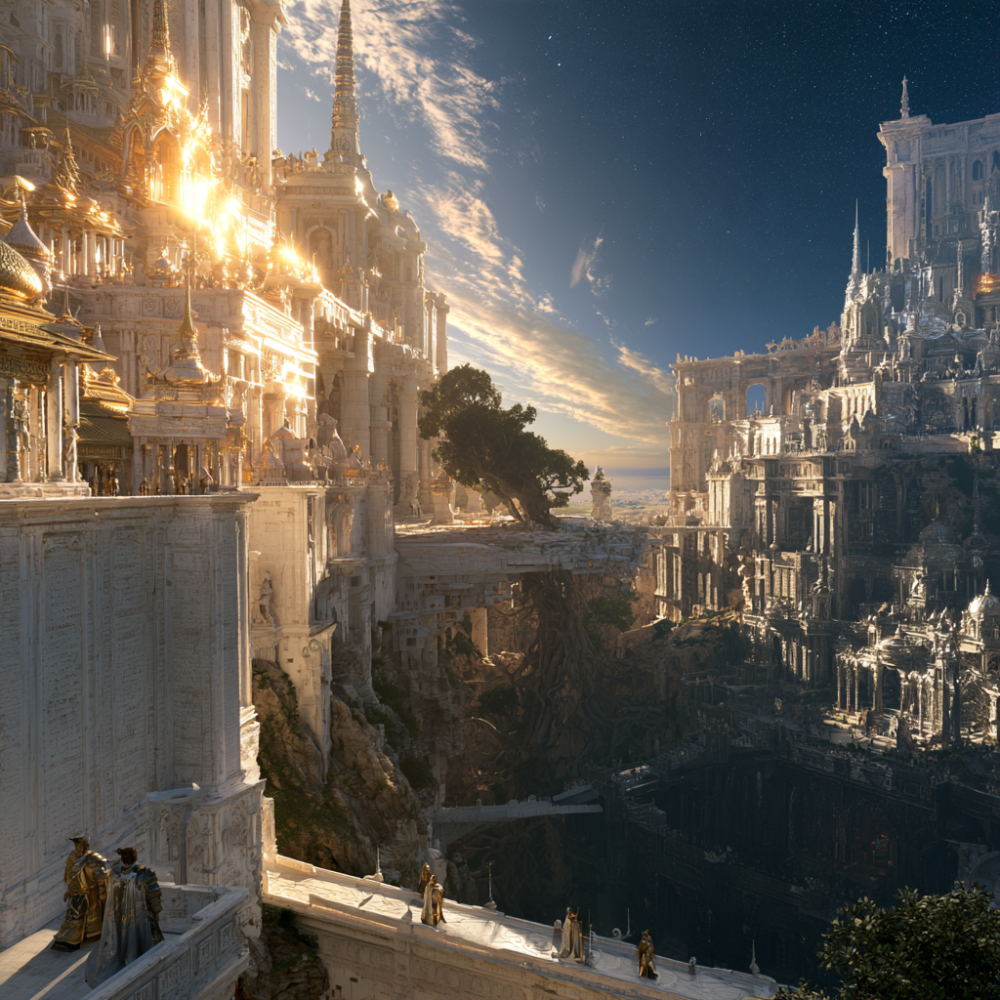
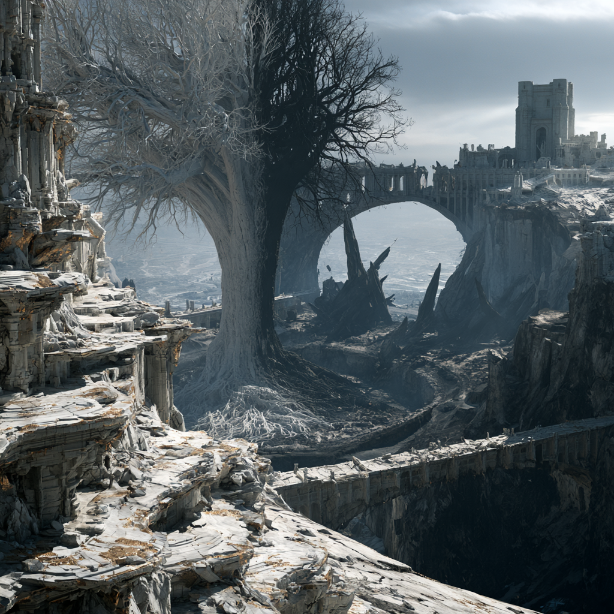

A bloodline born from a working no one on either side sanctioned, that built a nation on ground touching both heaven and hell, and outlived it in scattered pieces after heaven ended it in a single hour.
The bloodline began before Adonai-Vel, with a deliberate act rather than a romance: Lilith and a nameless member of Celestine's own host set out to create beings capable of surviving both celestial and demonic power at once. No one in Velaris knows this. Adonai-Vel was founded generations later, by that first working's descendants, as the first place a Nephilim had ever been allowed to simply exist.
Lilith was already the Mother of All Demons, sister to Asmo, the Devil, generations before Adonai-Vel existed. A Seraph, or an Archangel by some accounts, crossed into her court, and the two of them attempted something neither side had ever sanctioned: a working meant to produce beings that could hold both celestial and demonic power at once instead of being consumed by whichever half touched them first. The Seraph gave a portion of his own divine essence. Lilith gave her blood and her demonic essence. What answered wasn't born in any sense either species recognized. It was made, out of that union of power rather than flesh, and it broke the one law both sides had always kept.
Neither side forgave it. Celestine's host stripped the Seraph of what made him what he was and erased his name from the choir's own record so completely that no version of it survives. Lilith's price came from the working itself rather than from any court: the same law it broke barred her from ever protecting or guiding her children again, once they were old enough to survive without her hand carrying them. Asmo saw his sister's part in it as an act against their own court besides, and turned on the children rather than protect them in her place. Lilith hid them as long as the law let her, then had no choice left but to let go.
What the price assumed would follow, a handful of unshielded half-things dying out quietly in a world with no one left to protect them, never happened. Left alone entirely, the children survived anyway. Generations on, their descendants built a nation strong enough to rival heaven itself. Lilith took no part in any of it, and by then, bound as she was, she couldn't have. Whatever she carries from that working now, she doesn't call it grief and she doesn't bring it up.
Long before the Emperor's line or Auralith's crown, a third seat existed: a nation on ground said to touch both Celestine's light and Vashtara's dark at once. Its people were bred for that in-between position, long-lived enough to sit at the table with gods, mortal enough to still need one. Velaris no longer has the name. It has a ruin in the Hollowlands, labelled after a king who came looking for it centuries later, and a bloodline that never stopped knowing what that ruin used to be called.

The nation was small by any kingdom's standard and never tried to be otherwise. Its founders built inward rather than outward, on the theory that a people made from two gods' leftover law didn't need territory to prove they existed. The capital held terraces cut into pale stone, half of them roofed in gold leaf to catch the sun for Celestine, half of them sunk below ground level and left open to the night sky for Vashtara. No building in the city ignored either god. That was the rule long before it became a law: build for both, or don't build at all.
Government sat with a council of priest-kings, one line per founding family, each family tracing itself back to a different child of the first generation. They didn't rule through conquest or bloodshed, since there was no one nearby to conquer. They ruled through the one thing Adonai-Vel actually had that no one else did: a working relationship with both gods at once, however uneasy. Villages on both sides of the portal that would one day become Velaris and Auralith sent envoys there for exactly that reason, to have a dispute blessed, a treaty witnessed, a plague explained. Adonai-Vel took no payment for it that survives in any record. What it took, according to its own histories, was standing. Being needed by mortals kept it fed. Being needed by two gods kept it honest.
Daily life leaned toward long views. A people who might live centuries build differently than a people who won't. Adonai-Vel's art, what fragments of it exist, favors things meant to be finished by someone else: gardens planted for a shape they wouldn't take for eighty years, songs written in movements meant to be added to generation after generation, a single tapestry some records claim took eleven priest-kings and was still unfinished when the Hollowing came for it.
No single moment turned Adonai-Vel toward its own ending. Centuries of borrowing a portion of each god's power taught its people how to do more with less, on their own initiative, without asking first. They built on ground that shouldn't have held a city that size. They healed wounds no mortal physician could touch. They forged weapons and armor that outlasted the smiths who made them by lifetimes, and gave those smiths centuries rather than decades to get good at the work. None of it needed either god's blessing past the first few generations. Adonai-Vel had learned to run its own workshop.
By the time anyone outside the nation was paying close attention, it wasn't a curiosity anymore. It fielded soldiers who healed from wounds that should have ended them, scholars with genuine centuries to specialize in a single question, and craftsmen whose work still turns up today in places that have never heard the name Adonai-Vel. Heaven had spent generations treating a useful buffer state as the lesser party in the arrangement. That stopped being an accurate description well before anyone in power admitted it out loud.
The council split over what to do with everything the nation had become. One faction, led by the eldest founding house, argued for restraint: a good arrangement doesn't need testing. A louder, younger faction argued that a nation which had already outgrown its old role owed no apology for saying so plainly. What they built next, a throne meant to formalize the power they already held in practice, mattered less as a cause than as a symbol heaven could no longer pretend not to see. Adonai-Vel had already become the thing the throne only announced.
Heaven had tolerated Adonai-Vel as a useful buffer for longer than it ever intended to. What ended the tolerance wasn't the throne by itself. It was the plain fact that a mortal-adjacent bloodline had grown strong enough, capable enough, and independent enough that heaven could no longer treat the arrangement as one-sided in its own favor. Celestine's host had been the greater power in that relationship without contest for generations. Adonai-Vel had quietly stopped being the lesser party, and heaven decided, once it finally looked, that a stain like that on the order of things could not be allowed to stand.
The war that followed lasted a hundred years. It was neither clean nor quick. Adonai-Vel's soldiers, long-lived and hardened by a century of borrowed conflict before this one, held ground no ordinary mortal army could have held, and the early decades cost heaven more than its own records care to admit. Entire generations of Nephilim were born, raised, and killed inside that war, fighting something their grandparents had provoked and their grandchildren would ultimately lose. Heaven's own conduct across that century isn't remembered kindly even by its own surviving accounts: sieges that made no distinction between soldier and civilian, prisoners who didn't survive being questioned, whole terraces of the capital burned rather than taken intact. Adonai-Vel gave as good as it got for most of that century. It simply couldn't keep giving forever against something that didn't need to sleep, eat, or replace its dead the way mortals do.
By the war's final years, Adonai-Vel was a failing nation defending a capital it could no longer properly feed, count, or hold. Heaven had every advantage a hundred years of attrition provides, and it used all of them.
Heaven ended it with a single act rather than a final battle. When Adonai-Vel's last defenders made their stand around the throne room, the Seraphim above didn't send more soldiers. They unleashed heaven's power directly, throwing down light like spears from overhead in numbers no city, however fortified, could have survived. Velaris's own histories call what followed the Hollowing, and it's the reason a stretch of the Outlands still won't hold light properly and carries the name Hollowlands for it. Celestine's own light, spent at a scale it was never meant to be spent at, has never come back whole in that ground since.
No single account of what the actual hour looked like survives whole. What does survive, passed down inside the bloodline rather than kept in any library, agrees on the shape of it even where the details drift: no further warning beyond the century that had already been warning enough, light falling from directly overhead in numbers too dense to count, and the ground giving out under people before they'd finished looking up. Those who lived to describe it afterward describe silence more than sound. Whatever heaven did to that land in that hour, it didn't announce itself the way an ordinary battle does.
What was left of Adonai-Vel wasn't leveled so much as erased. The handful who survived it, those who hadn't been in the capital when the Seraphim came, or who'd fled far enough during the hundred years of war to still be alive to flee further, were given no ground to return to and no standing left to ask for any. Heaven's judgment didn't stop at the ruin. It extended to every survivor still breathing: exile, absolute and unappealed, from a homeland that no longer physically existed to return to anyway. The punishment was never a curse laid on their blood. It was living through a war that took a century of their family's lives, watching their entire people end in a single hour they couldn't stop, and being forbidden the one piece of ground where any of it would have made sense to grieve.
Centuries later, a king now remembered only as the Late King went looking for what was left of it. His study still stands out there, still bearing his name. Whatever he found did not end well for him, and the Hell Gates near his study did not exist before he started digging.

What survived the Hollowing didn't survive as a people so much as a scatter of individuals who happened to share a bloodline, cast out under a judgment none of them were given any way to contest. Adonai-Vel had no border to defend once its ground had failed under it, and no capital to retreat to once the capital was the part that failed worst, and heaven's decree made returning impossible even for those who might have tried. Survivors went in whatever direction put the most distance between themselves and the ruin, which for most of them meant the coast, and from the coast, the sea.
The earliest generations of survivors changed their names within a lifetime, usually more than once. Some settled quietly into mortal villages and let their unusual longevity get explained away as a family trait or a local rumor. Others kept moving on principle, unwilling to be in one place long enough for a pattern to be noticed. A few tried, in the first century or two after the exile, to find each other and rebuild something. Every one of those attempts failed, some quietly and some badly, and by the second century most survivors had concluded that gathering was the mistake that had gotten their parents' generation killed the first time.
No unified diaspora culture ever formed. What formed instead was a habit, passed down more by instinct than instruction, of staying small, staying mobile, and never explaining the eyes.
Demons recognize the bloodline faster than most, and not kindly. Whatever loyalty the Mother of All Demons held for her hidden children generations ago didn't automatically pass down to every demon born after her, and plenty of Asmo's older court still treat Nephilim as a standing reminder of a working none of them personally approved but all of them apparently still resent, made behind the court's back and with an enemy's power besides.
Angels are worse, if less common to encounter at all. Celestine's host erased the Seraph's name from its own record rather than let the story survive, and whatever institutional memory remains of that erasure treats the bloodline less as kin and more as evidence. Most Nephilim who've ever crossed paths with a true angel describe the encounter as brief and cold, and none describe it as friendly.
Ordinary demons and ordinary angels, the kind with no particular rank or memory that old, mostly don't recognize a Nephilim on sight at all. The signs are too easy to mistake for something mundane, which suits the bloodline fine.
Adonai-Vel's language never actually died. A handful of lineage-keepers within the scattered bloodline still speak it fluently and teach it deliberately, through hand-copied primers guarded as tightly as anything the bloodline has left. Most survivors never crossed paths with a keeper and never will. What reached them instead is fragments: a few personal names, a handful of ritual phrases, nothing that adds up to a taught language. Adonai-Vel itself is one of the few words to survive whole outside that guarded circle. A few personal names still carry the old rhythm, clipped and vowel-heavy, which is part of why Marasa'n's name draws a second look from anyone who's ever studied dead languages, though almost no one in Velaris has reason to, and she has no more claim on a keeper's teaching than any other disconnected survivor does.
Craftsmanship survived better than language did, carried out in objects rather than memory. Adonai-Vel's smiths built for both gods the same way its architects did, working gold and dark silver into a single piece rather than choosing one, and a handful of those pieces are still out there somewhere, in old family vaults or forgotten battlefield graves, unrecognized for what they are by anyone who finds them. A blade or a piece of armor built in the old style doesn't announce itself as anything but very old and very well made. Only another Nephilim, or someone who's spent a lifetime studying dead nations, would know to look twice.
Nobody in Velaris is looking for Nephilim, which is the main reason none have been found. The signs read as coincidence to anyone who doesn't already know what they mean: unusual eyes get put down to a rare condition or a good dye job, early grey gets put down to stress or a family trait, an unusually long life gets put down to good fortune, at least until it stops being plausible and the person in question quietly moves on before anyone does the math.
Common folklore across both kingdoms carries a few surviving fragments of the old fear without any of the context. A person with two different-colored eyes is still, in some corners of the Outlands, considered lucky or unlucky depending on who's asked, and a story about a "grey traveler who never seems to age" surfaces often enough in tavern talk to suggest more than one Nephilim has passed through and left an impression without ever explaining why. None of this rises to organized suspicion. It rises to the kind of thing people mention once and then forget, which is exactly the cover the bloodline has learned to rely on.
Bloodline members who do settle somewhere tend toward work that rewards a long view and doesn't ask too many questions about the past: mercenary work, trade routes, old-object appraisal, and occasionally the priesthood, ironically enough, of one god or the other, usually Vashtara's smaller and less-watched shrines rather than Celestine's public ones.
No homeland remains to return to, and every telling agrees the exile was explicit and permanent. What's left are scattered individuals with no court, no shared home, and sharply different opinions on whether Adonai-Vel deserved what it got.
Three postures show up among the survivors who still know what they are:
No one in Velaris currently connects the Precipice Realm to Adonai-Vel by name; that thread survives only in the bloodline itself, and even within the bloodline, most survivors know the name without knowing where the ruin actually sits. Outside it, anyone who recognizes the old signs tends toward suspicion first. Velaris does not tell kindly the story of a nation that grew strong enough to rival heaven.